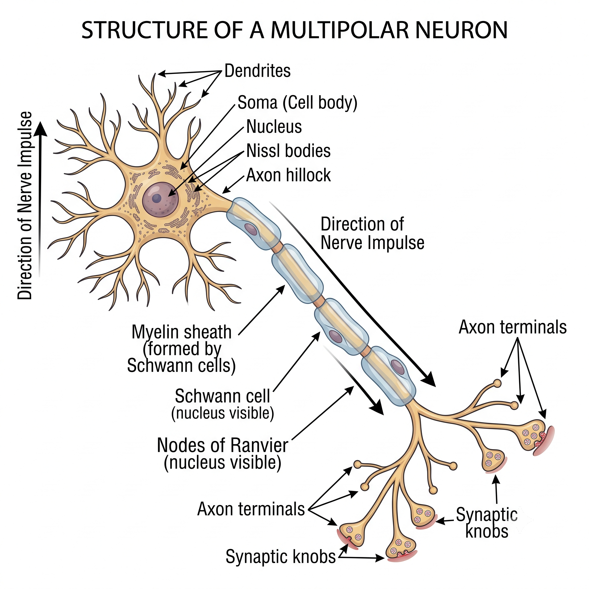

Parts of a Neuron
Click a Structure to Explore It
Reference — Structure of a Multipolar Neuron

Signal direction runs one way: dendrites → cell body → axon hillock → down the axon → axon terminals (synaptic knobs). The gaps in the myelin are the nodes of Ranvier.
Insulating the Axon
Who Makes Myelin? CNS vs. PNS
CNS Myelination
| Myelin-forming cell | Oligodendrocytes |
| One cell wraps | Several axons at once |
| Neurilemma? | No (no continuous outer sheath) |
| Location | Brain and spinal cord |
PNS Myelination
| Myelin-forming cell | Schwann cells |
| One cell wraps | One segment of one axon |
| Neurilemma? | Yes (Schwann cytoplasm + nuclei) |
| Location | Peripheral nerves |
Myelin Sheath
A fatty (lipoprotein) insulating layer wrapped in many layers around large axons.
Neurilemma
The outer layer of Schwann cell cytoplasm and nuclei surrounding the myelin sheath (PNS).
Nodes of Ranvier
The gaps in the myelin sheath between adjacent Schwann cells.
Schwann Cells
The neuroglial cells that produce myelin in the peripheral nervous system.
Two Kinds of Nervous Tissue
White Matter vs. Gray Matter
White Matter
| Made of | Bundles of myelinated nerve fibers (axons) |
| Why "white"? | The lipid (fatty) myelin looks white |
| Main job | Carries signals between regions — the "cables" |
Gray Matter
| Made of | Bundles of cell bodies (or unmyelinated fibers) |
| Why "gray"? | No myelin, so no white coloring |
| Main job | Integration & processing — the "computers" |
Classifying Neurons by Shape
Structural Classes — Click a Type
Reference — Comparison of Neuron Structural Types

Neurons are grouped by how many processes leave the cell body: bipolar (two), unipolar/pseudounipolar (one that splits into peripheral and central branches), and multipolar (many dendrites + one axon).
Classifying Neurons by Job
Functional Classes — Follow the Signal
Click each neuron above. Notice the signal path: information flows in (sensory) → is processed (interneuron) → and a command flows out (motor).